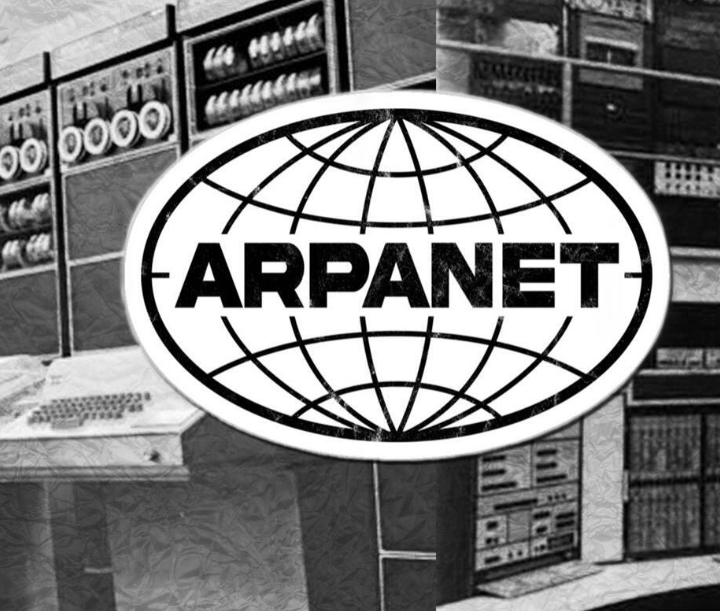
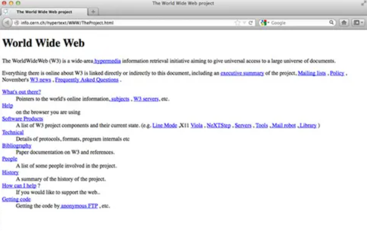
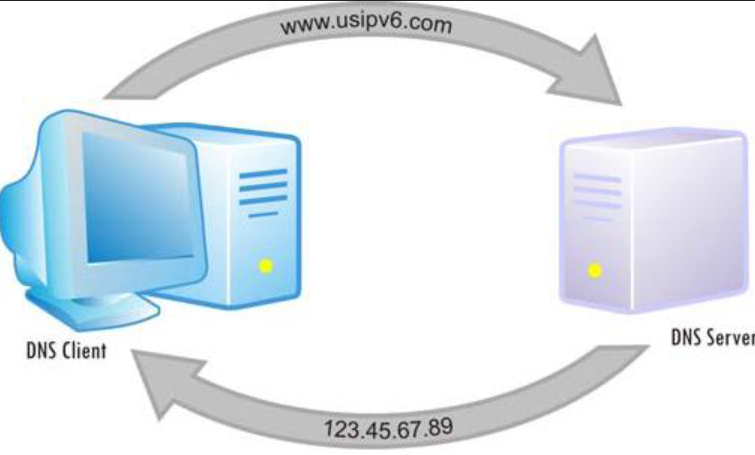
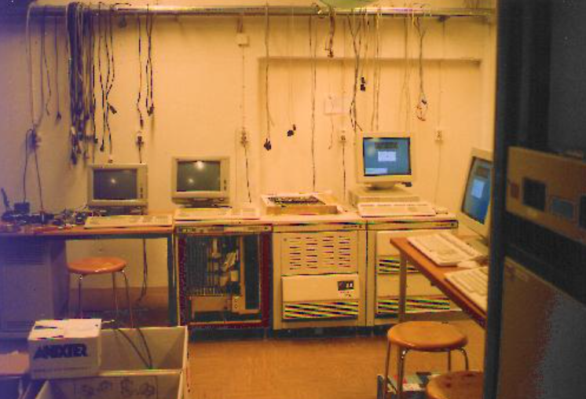

En kort introduktion
Internet har utvecklats under många år. Det började med olika datornätverk som gjorde det möjligt för datorer att kommunicera med varandra. Ett viktigt steg var ARPANET, som senare följdes av World Wide Web.
På den här hemsidan kan du läsa om några av de viktigaste händelserna i webbens historia och hur tekniken utvecklades från forskningsnätverk till den webb vi använder idag.
1. Vad var ARPANET?

ARPANET var ett av de första stora datornäten och kan ses som en viktig föregångare till dagens Internet. Namnet ARPANET står för Advanced Research Projects Agency Network och utvecklades i USA av forskningsorganisationen ARPA. ARPANET startade 1969 och det första meddelandet skickades mellan University of California, Los Angeles (UCLA) och Stanford Research Institute. Nätverket användes framför allt av forskare och universitet för att kunna kommunicera och dela information mellan datorer på olika platser. ARPANET är viktigt för Internets historia eftersom det utvecklade idéer och tekniker för att koppla ihop datorer i olika nätverk. Det blev därför en viktig grund för utvecklingen av det Internet som vi använder idag.
2. Vem skapade World Wide Web?
World Wide Web skapades av den brittiske datavetaren Tim Berners-Lee när han arbetade på forskningsorganisationen CERN i Schweiz. Tim Berners-Lee föddes 1955 och arbetade med att göra det enklare för forskare att dela information med varandra. År 1989 presenterade han sitt första förslag till World Wide Web. Under 1990 utvecklade han systemet vidare och skapade bland annat den första webbläsaren och webbservern. World Wide Web skapades för att människor skulle kunna dela information genom dokument som var kopplade till varandra med hjälp av länkar. Webben gjorde det mycket enklare att hitta och läsa information på Internet och blev så småningom tillgänglig för människor över hela världen.
3. Vilken var den första webbsidan?

Den första webbplatsen skapades av Tim Berners-Lee på CERN och hade adressen info.cern.ch. Den skapades omkring 1990 och blev tillgänglig på Internet 1991. Den första webbsidan såg mycket enkel ut jämfört med dagens hemsidor eftersom den framför allt bestod av text och länkar. På sidan fanns information om World Wide Web och hur webben fungerade. Besökare kunde bland annat läsa om hur man skapade webbsidor och hur man använde hypertext och länkar. Den första webbplatsen användes alltså för att förklara själva World Wide Web och hjälpa människor att förstå hur det nya systemet fungerade. Den blev början på den webb som senare växte till miljontals och sedan miljarder olika webbplatser.
4. Vilken var den första stora webbläsaren?
En av de första stora webbläsarna hette NCSA Mosaic och utvecklades av National Center for Supercomputing Applications vid University of Illinois i USA. Mosaic släpptes 1993 och blev snabbt viktig för webbens utveckling. Det fanns webbläsare redan innan Mosaic, bland annat den webbläsare som Tim Berners-Lee skapade, men Mosaic gjorde webben mycket enklare och mer attraktiv för vanliga användare. En viktig funktion var att Mosaic kunde visa bilder direkt tillsammans med text på webbsidor. Det gjorde att webbsidor kunde bli mer visuella och användarvänliga. Mosaic bidrog därför till att World Wide Web spreds till en mycket större publik och blev en viktig del av webbens utveckling.
5. Vad är en IP-adress och DNS?

En IP-adress är en adress som används för att identifiera en dator, mobiltelefon, server eller annan enhet på ett nätverk. Den gör det möjligt för information att hitta rätt dator på Internet. Eftersom IP-adresser kan vara svåra för människor att komma ihåg används DNS, som står för Domain Name System. DNS fungerar ungefär som en telefonbok för Internet eftersom det kopplar ihop namn på webbplatser med deras IP-adresser. När vi skriver in en webbadress i webbläsaren kan DNS hitta den IP-adress som hör till webbplatsen. Webbläsaren kan sedan kontakta rätt server och hämta webbsidan. DNS behövs därför eftersom det är mycket enklare för människor att komma ihåg namn på webbplatser än långa eller komplicerade IP-adresser.
Ett exempel på en IP-adress är: 192.168.1.1.
Det skulle vara svårt att komma ihåg IP-adressen till varje webbplats. Därför kan vi använda namn som exempelvis "example.com". DNS hittar sedan vilken IP-adress som hör ihop med namnet.
Förenklat fungerar det så här:
- Du skriver in en webbadress.
- DNS hittar IP-adressen som hör till adressen.
- Din dator ansluter till rätt server.
- Webbsidan skickas tillbaka till din webbläsare.
6. Vilken var Sveriges första hemsida?

Sveriges första webbplats skapades 1993 av Lysator, en datorförening vid Linköpings universitet. Lysator var tidigt intresserade av Internet och byggde en av Sveriges första webbservrar. Webbplatsen publicerades 1993 och innehöll information om Lysator, föreningen och dess verksamhet. Den var mycket enklare än dagens hemsidor och bestod främst av text och länkar. Webbplatsen blev ett viktigt exempel på hur World Wide Web började användas även i Sverige. Lysators webbplats finns fortfarande kvar i någon form och är ett viktigt historiskt exempel på den tidiga svenska webben. Den visar hur snabbt den nya tekniken spreds från forskningsmiljöer till andra delar av samhället.
Sveriges första webbplats hade adressen lysator.liu.se.